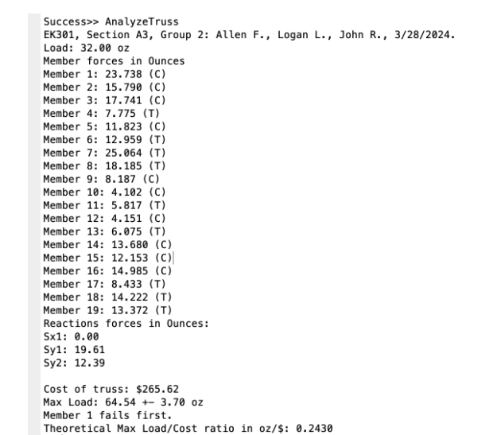
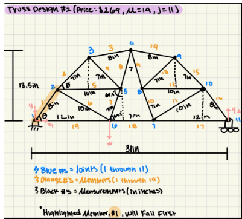

EK301 Truss Design Project
As part of the EK301 Statics course, we were tasked with building a MATLAB algorithm that can input any truss design and output which members will fail first and the maximum load before failure. We then built one of the designs and compared it with our algorithm predictions.
Materials
- MATLAB
- Acrylic Plastic Truss Members

Skills Used
- MATLAB
- Physics
- Collaboration
